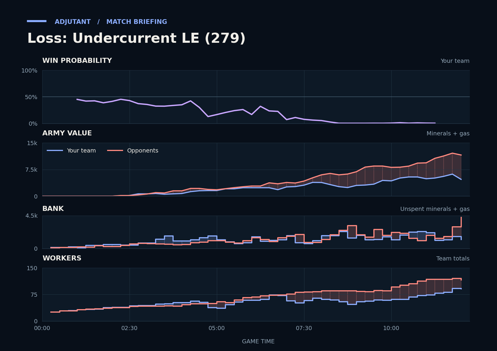

Loss: Undercurrent LE (279)
Provisional debrief. The full report (timeline, insights and analysis) is being generated.

Cached narration uses different analysis inputs (facts, engine notes, prompts or model settings). It has not been regenerated for this report.
**Loss.** The opponents' army was about twice the duo's going into the last fight at TakeTheTip's fourth, and it was built on more income.
**Why**
- 5:47–7:13: doofus's Hellions killed 24 of TakeTheTip's Drones, halving their workers from the earlier peak.
- 7:49–9:02: doofus's Liberators and Hellions killed 28 of Scallop's SCVs, dropping Scallop to single-digit workers.
- 11:49–12:14: The duo's armies went in at half the opponents' size, and TakeTheTip typed gg.
Current engine analysis: Loss. Review 5:47–7:13: TakeTheTip lost 24 Drones to Hellions. The biggest fight came at 11:49–12:14 (6,600 lost, 2,650 killed).